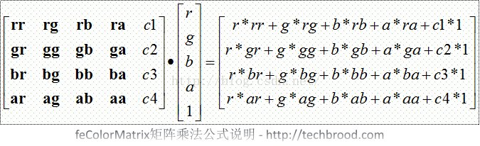

svg在 HTML 页面
svg矩形
svg 路径 -
命令：
M = moveto
L = lineto
H = horizontal lineto
V = vertical lineto
C = curveto
S = smooth curveto
Q = quadratic Bézier curve(二次B_zier曲线)
T = smooth quadratic Bézier curveto
A = elliptical Arc(椭圆弧)
Z = closepath(关闭路径)
SVG Stroke 属性(stroke, stroke-width, stroke-linecap, stroke-dasharray, stroke-linecap)
svg滤镜
feBlend - 与图像相结合的滤镜
feColorMatrix - 用于彩色滤光片转换
feComponentTransfer
feComposite
feConvolveMatrix
feDiffuseLighting
feDisplacementMap
feFlood
feGaussianBlur
feImage
feMerge
feMorphology
feOffset - 过滤阴影
feSpecularLighting
feTile
feTurbulence
feDistantLight - 用于照明过滤
fePointLight - 用于照明过滤
feSpotLight - 用于照明过滤
变换矩阵的定义和说明

<filter id="f1" x="0%" y="0%" width="100%" height="100%">
<feColorMatrix result="original" id="c1" type="matrix" values="1 0 0 0 0
0 1 0 0 0
0 0 1 0 0
0 0 0 1 0" />
</filter>